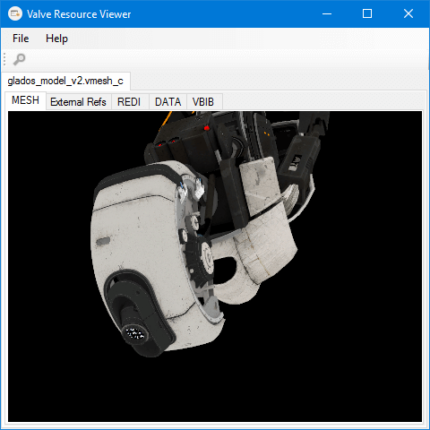
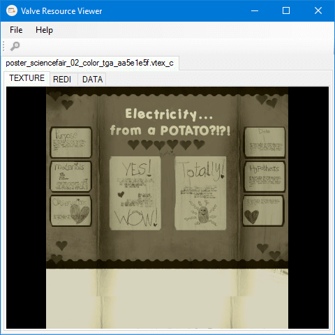
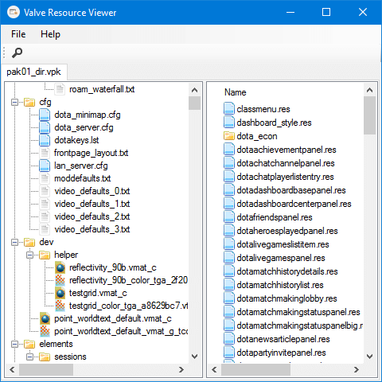

Source 2 Resource Viewer
C# Library, CLI Utility, GUI Viewer.
Download

Preview models and meshes in 3D space

View and export textures along with other resources

View and export files in VPK packages
Use the command line utility